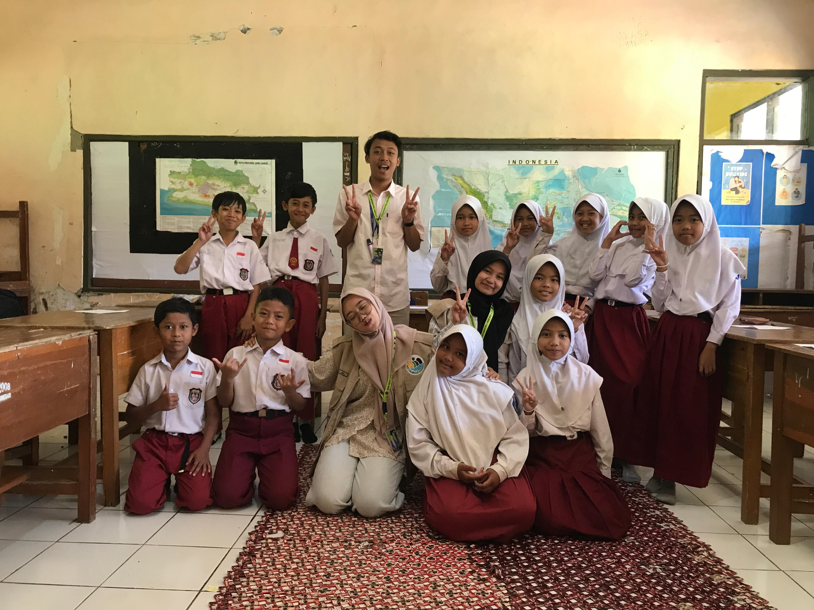

Program Utama

Seminar Workshop Pengembangan dan Pengelolaan Wisata Lokal Desa Tanjungsari

Mengembangkan website desa https://tanjungsari-ciamis.desa.id/potensi-desa
Program Tambahan

Mengajar Di Sekolah

Membuat Plang Wisata

Sosialisai UMKM yang ada di Desa Tanjungsari

Menghadiri pengajian

Denah Leuwi Pamipiran

Denah Curug Panganten
Program Bantu

Kerja Bakti

Memperbaiki Jalan